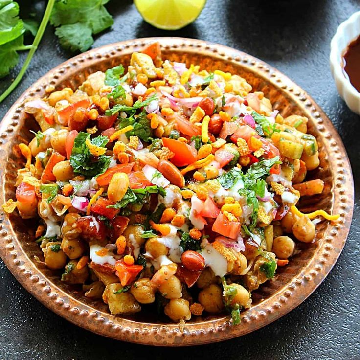

Bhel Puri Recipe
Bhelpuri is a popular Indian street food, known for its tangy, spicy, and crunchy flavors. It is made with puffed rice, vegetables, chutneys, and sev. Here's how you can make it at home:
Ingredients:
- 2 cups puffed rice (murmura)
- 1/2 cup sev (thin crispy noodles made from chickpea flour)
- 1 small onion, finely chopped
- 1 small tomato, finely chopped
- 1 medium potato, boiled and diced
- 1/4 cup boiled chickpeas (optional)
- 2 tbsp roasted peanuts (optional)
- 2 green chilies, finely chopped
- 2 tbsp fresh coriander leaves, chopped
- 1/4 tsp chaat masala
- Salt to taste
- 1 lemon, cut into wedges
For the Chutneys:
Tamarind Chutney:
- 1/2 cup tamarind pulp
- 1/2 cup jaggery (or sugar)
- 1/2 tsp cumin powder
- Salt to taste
- Water as needed
Instructions: Cook tamarind pulp and jaggery together with a little water until thick. Add cumin powder and salt. Set aside.
Green Chutney:
- 1 cup fresh coriander leaves
- 1/4 cup fresh mint leaves
- 1-2 green chilies
- 1-inch ginger piece
- Salt to taste
- Lemon juice to taste
Instructions: Blend all the ingredients into a smooth paste with a little water. Set aside.
Instructions:
1. Prepare the Bhel:
- In a large mixing bowl, add the puffed rice.
- Mix in the chopped onions, tomatoes, boiled potatoes, and green chilies.
- Add the boiled chickpeas and roasted peanuts (if using).
2. Add Chutneys and Spices:
- Drizzle 2-3 tablespoons of tamarind chutney and green chutney (adjust according to taste).
- Sprinkle chaat masala and salt.
- Toss everything well to combine.
3. Final Touch:
- Just before serving, add sev to the mixture and give it a quick toss to keep the bhel crunchy.
- Garnish with chopped coriander leaves and squeeze some lemon juice on top.
4. Serve:
Serve the bhel puri immediately, as it tends to get soggy if left for too long. You can garnish with extra sev, coriander, and chutneys for more flavor.
Enjoy your crunchy and tangy bhel puri at home!